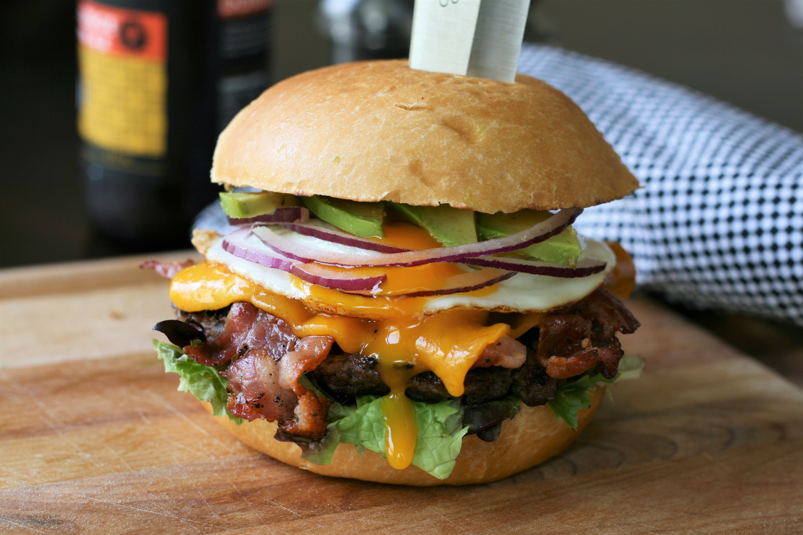

Burger

Description
If you're craving a really juicy, delicious burger that's packed with flavor and textures then this egg-topped burger is the burger for you! When you bite into this burger the burst of the egg yolk and the creaminess of the avocado with the crunchiness of the bacon sends this burger over the edge.
Ingredients
- 3 tablespoons salted butter, softened
- 4 hamburger buns, split
- 8 slices thick-cut bacon
- 1 1/2 pounds lean ground beef
- 2 tablespoons Worcestershire sauce
- 1 tablespoon steak seasoning
- 4 slices Cheddar cheese
- 4 large eggs
- 4 large lettuce leaves
- 1/2 red onion, thinly sliced
- 2 avocados - peeled, pitted, and thinly sliced
Steps
- Butter hamburger buns
- Cook bacon
- Mix ground beef, sauce and seasoning and make patties
- Grill patties
- Put cheese on
- Grill buns
- Assemble burger with salad
- Serve